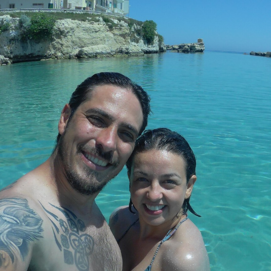

Sobre mim
Olá, me chamo André Dienes Friedrich, tenho 38 anos, casado, sou uma pessoa extrovertida que gosta de conversar e viajar, estudante de programação nos cursos, Full Stack Python e Engenharia da Qualidade de software pela EBAC e com formação para o primeiro semestre de 2022 em Jogos Digitais pela Universidade Estácio de Sá. Essa é uma leve pincelada sobre mim, abaixo deixo alguns links de exercícios que estou fazendo e meus links de redes pessoais. Forte abraço.

